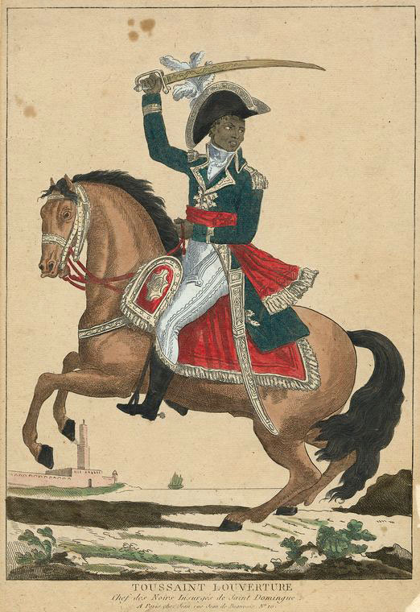

The most successful slave revolt in history—and why the world punished Haiti for daring to be free
The Haitian Revolution (1791–1804) was the most radical of all the Atlantic revolutions. It wasn't just about independence—it abolished slavery and, in practice, declared that all people are created equal.
Watch the video below and answer the questions to understand how enslaved Africans transformed the meaning of revolution.
📺 Age of Revolutions: The Haitian Revolution
Consider the following as you view the video:

Toussaint L'Ouverture (c. 1743–1803)
Directions: Use the sources below and your knowledge of history to answer each of the questions that follow.
Source: Proclamation from French First Consul Napoleon Bonaparte and French Secretary of State, November 8, 1801
"INHABITANTS OF ST. DOMINGO,
Whatever your origin or your color, you are all French; you are all equal, and all free, before God, and before the Republic.
France, like St. Domingo, has been a prey to factions, torn by intestine commotions, and foreign wars. But all has changed; all nations have embraced the French, and have sworn to them peace and amity; the French people have embraced each other, and have sworn to be all friends and brothers. Come also, embrace the French, and rejoice to see again your European friends and brothers.
[. . .]
Whoever shall dare to separate himself from the Captain-General, will be a traitor to his country, and the indignation of the country will devour him as the fire devours your dried canes.
Done at Paris, &c.
(Signed) The First Consul, BONAPARTE.
The Secretary of State, H.B. MARET"
Source: Letter from Haitian revolutionary leader Toussaint Louverture to a Haitian general, February 9, 1802
"MY DEAR GENERAL, [. . .]
The whites have resolved to destroy our liberty, and have therefore brought a force commensurate to their intentions.
[. . .]
Distrust the whites,--they will betray you if they can; their desire, evidently manifested, is the restoration of slavery. I therefore give you a carte-blanche for your conduct. All which you shall do will be well done. Raise the cultivators in mass, and convince them of this truth,--that they must place no confidence in those artful agents who may have secretly received the proclamations of the white men from France, and would circulate them clandestinely, in order to seduce the friends of liberty.
I rely entirely upon you, and leave you completely at liberty, to perform every thing which may be requisite to free us from the horrid yoke which we are threatened.
I wish you good health,
(Signed) TOUSSAINT L'OUVERTURE"